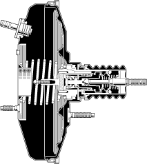

| ブレーキブースター |
| ● |
9"シングルタイプのブレーキブースターを採用しました。
|
| ● |
機械式ブレーキアシストシステムを採用しました。
|
|  |
 機械式ブレーキアシスト付きブレーキブースターの構造 機械式ブレーキアシスト付きブレーキブースターの構造
|
 機械式ブレーキアシスト付きブレーキブースターの作動（ブレーキ非作動状態） 機械式ブレーキアシスト付きブレーキブースターの作動（ブレーキ非作動状態）
|
| 機械式ブレーキアシスト付きブレーキブースターの作動（ブレーキアシスト非作動時）
|
| 機械式ブレーキアシスト付きブレーキブースターの作動（ブレーキアシスト作動時）
|
| 機械式ブレーキアシスト付きブレーキブースターの作動（ブレーキアシスト作動後）
|
| ブレーキアシストの考え方
|
| ブレーキアシストの注意事項
|